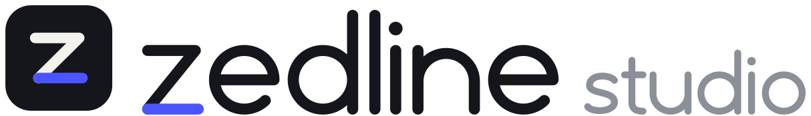

Brand kit.
A Z is one line that folds twice. The mark is that single line; its last stroke — the "line" in Zedline — carries the accent blue. The wordmark is drawn with the same monoline pen.
Logo


Colour
Ink#14161B · RGB 20 22 27
Paper#F4F2EC · RGB 244 242 236
Zed blue#4B55FF · RGB 75 85 255
Mist#8A8F98 · RGB 138 143 152
Type
Wordmark
Drawn, never typed. Always use the files — no font reproduces it.
Outfit
Headings and text, 400 / 500 / 600 (Google Fonts, SIL Open Font License).
Arabic
IBM Plex Sans Arabic for text; each app may add its own display face.
Use
Space
Keep clear space around the logo of at least half the mark's height.
Size
The mark at least 24 px; the lockup at least 120 px wide.
The blue line
Only the base line is blue. Don't recolour the fold or swap the colours around.
Keep it plain
No stretching, rotating, outlines, shadows or gradients. On busy photos, use the tile.